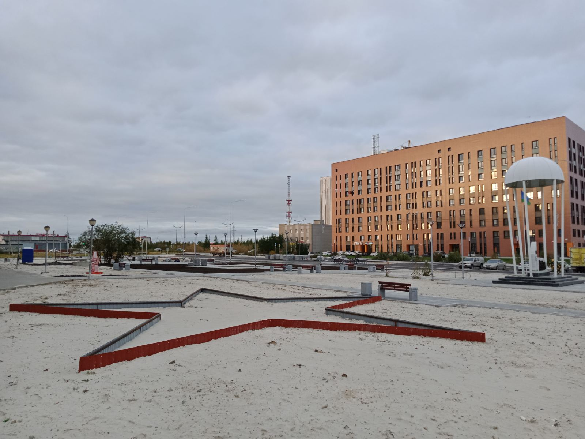

Аллея мужества заложена в 2017 году. Первым на ней был установлен памятный знак воинам-десантникам и морским пехотинцам. Инициатива установки памятника принадлежит членам региональной общественной организации «Десантное братство в ЯНАО» и военно-патриотического центра «Вымпел-Ямал».

Общественники организовали сбор средств на установку памятника, а администрация поддержала идею,
выделив участок в Южном районе города за Богоявленским собором. Вклад в столь значимое для города
событие внесли ООО «Уренгойдорстрой», МУП «Уренгойское городское хозяйство» и ООО «Уренгойские городские сети».
На памятнике высечена цитата «Никто, кроме нас», ставшая девизом ВДВ, и изображен портрет основателя
воздушно-десантных войск, генерала армии, героя Советского Союза Василия Филипповича Маргелова.

«Крылатая пехота» России служит примером отваги, нерушимого боевого братства и образцовой боевой выучки. Величие подвигов воинов-десантников, защищавших Родину в годы Великой Отечественной войны, проявивших героизм и мужество в Афганистане, миротворческих операциях и локальных конфликтах, навсегда останется в памяти людей. Воздушно-десантные войска заслуженно считаются элитой российской армии и пользуются неизменным уважением. Военная служба в рядах ВДВ является предметом особой гордости всех, кто имеет отношение к голубым беретам.

Памятник десантникам и морским пехотинцам в газовой столице торжественно открыли 2 августа 2017 года, в день Воздушно-десантных войск. В этот день Православная церковь празднует память пророка Ильи – небесного покровителя «крылатой пехоты». По просьбе общественников священнослужитель новоуренгойского православного храма Илья Боровских совершил чин освящения памятника.

28 мая 2018 года в Новом Уренгое в честь 100-летия Пограничной службы ФСБ России был открыт памятник «Пограничникам всех поколений». Инициаторами установки памятника выступили новоуренгойцы – члены местной общественной организации «Рубеж». Они собрали средства на изготовление памятного знака и его доставку в город из мастерской Первоуральска.
Эскиз проекта монумента разработали сотрудники ООО «Газпром добыча Ямбург», в частности ведущий специалист ССО и СМИ Галина Каширова. Общество также оказало спонсорскую помощь в обустройстве памятника. Свой вклад в реализацию идеи внесли и другие городские предприятия: ООО «Уренгойдорстрой», АО «Арктикгаз», ООО «Сибэкс», АО «Ачимгаз». На торжественную церемонию открытия собрались новоуренгойцы, служившие в пограничных войсках, кадеты, представители местного самоуправления и окружного правительства, а также руководители новоуренгойских предприятий. Тем, кто принял активное участие в возведении монумента, были вручены благодарственные письма.


В перспективе Аллея мужества – настоящий мемориальный комплекс. За его создание горожане высказались в ходе голосования на портале «Живём на Севере». К уже установленным памятникам десантникам и морским пехотинцам и пограничникам добавятся еще три памятных знака – пожарным, погибшим при исполнении долга, участникам локальных войн и военных конфликтов XX-XXI веков, а также морскому флоту. На Аллее обустроят дорожки для прогулок, скамейки, будут высажены деревья.
{kind=link}
